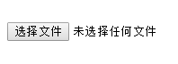

今天去面试,碰到了一道题,也许是因为紧张或者喝水喝多了,一时竟然没有明白面试官的真正意图,回来之后一细想原来这么简单,哭笑不得,特此记录一下!
原题是这样的: 如何用一张图片代替 'input:file' 上传本地文件??
因为默认的
<input type='file'> 上传文件控件样式特别丑,需要换成自定义的图片,如何实现这个功能??
也就是,将这个玩意:

换成这样的:
当时我的解决方案是这样的:
<input type="file" style="display:none" name="" id="">
<img src="diy图片路径" alt="">
<script>
document.querySelector('img').onclick = function(){
document.querySelector('input[type=file]').click();
}
</script>
我的意图是将input标签隐藏,然后给img注册点击事件的同时给input挂载点击事件,触发input:file的默认行为。但这个方案遭到了面试老师的‘一票否决’。
他的理由是：“当你把标签隐藏后，你就无法给他注册事件了，因为你看不到他！！”
对于这个理论我实在不敢苟同,就算标签被隐藏掉,他依旧存在在DOM树上并没有消失,当然可以对它进行操作,关于这一点我们起了一些观点上的争执。
好吧,当时我确实没有固执自己的意见,毕竟跟面试老师起争执对我没有任何好处 ฅ۶ó ﹏ò
当后来面试官问到如何点击文本让input获取焦点的时候我才恍然明白他的真实意图,他应该是想让我用这种方法:
<form>
<input type="file" id="file">
<!--用for属性绑定file控件-->
<label for="file">
<img src="diy图片路径" alt="">
</label>
</form>
label 是 HTML定义的一个标签,他的 for 属性的值等于它相关元素的 id 的值时，可以进行功能的捆绑(简单点说就是你点label标签就相当于点击它所绑定的input)。
那有了这个东西想要实现这个功能就不能再简单了!!!至于样式,清掉就OK啦!
不得不说,这种处理方法无论从语义话还是效率上都要比直接操作DOM好的多!!!
但是,作为一名开发者,一种功能实现肯定有多种处理办法,不去验证别人的方案就给予否决的话....
2017 - 03 -10
今天跟一位好朋友聊到这个话题的时候,她又提供了另外一种思路,很是巧妙~~
代码如下:
<form style="position:relative">
<input type="file" style="position:absolute;opacity:0;" >
<img src="diy图片路径">
</form>
她并没有将input隐藏掉,而是把它"变透明了",然后覆盖在图片上面 ╭(；ŎдŎ)╮ 简直鬼斧神工,我都没想到这点......不失为一个好方案!!
言而总之,实现的方法有很多,肯定还有其他的许多方法,不同的场景采取什么样的方案,就需要我们去仔细斟酌了。